A quick start guide to the scider package
Mengbo Li, Ning Liu, Quoc Hoang Nguyen and Yunshun Chen
2026-06-10
Source:vignettes/scider_userGuide.Rmd
scider_userGuide.Rmdscider is an user-friendly R package providing functions to model the global density of cells in a slide of spatial transcriptomics data. All functions in the package are built based on the SpatialExperiment object, allowing integration into various spatial transcriptomics-related packages from Bioconductor. After modelling density, the package allows for serveral downstream analysis, including colocalization analysis, boundary detection analysis and differential density analysis.
Installation
if (!require("BiocManager", quietly = TRUE)) {
install.packages("BiocManager")
}
BiocManager::install("scider")The development version of scider can be installed from
GitHub:
devtools::install_github("ChenLaboratory/scider")Load data
In this vignette, we will use a subset of a Xenium Breast Cancer dataset.
data("xenium_bc_spe")In the data, we have quantification of 541 genes from 10000 cells.
spe## class: SpatialExperiment
## dim: 541 10000
## metadata(0):
## assays(1): counts
## rownames(541): ENSG00000121270 ENSG00000213088 ... BLANK_0444
## BLANK_0447
## rowData names(3): ID Symbol Type
## colnames(10000): cell_212124 cell_120108 ... cell_252054 cell_568560
## colData names(21): cell_id transcript_counts ... cell_type sample_id
## reducedDimNames(0):
## mainExpName: NULL
## altExpNames(0):
## spatialCoords names(2) : x_centroid y_centroid
## imgData names(1): sample_idWe also have cell-type annotations of these cells, there are 4 cell types.
table(colData(spe)$cell_type)##
## B cells Breast cancer Fibroblasts T cells
## 643 3550 4234 1573We can use the function plotSpatial to visualise the
cell position and color the cells by cell types.
plotSpatial(spe, group.by = "cell_type", pt.alpha = 0.8)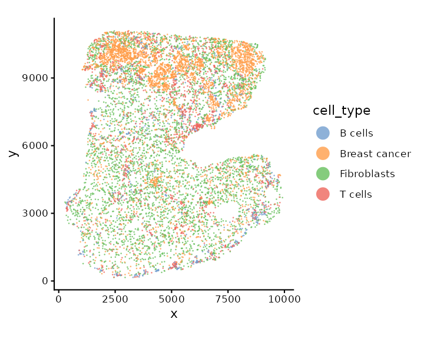
Grid-based analysis
scider can conduct grid-based density analysis for
spatial transcriptomics data.
Density calculation
We can perform density calculation for each cell type using function
gridDensity. The calculated density and grid information
are saved in the metadata of the SpatialExperimnet object.
spe <- gridDensity(spe)
names(metadata(spe))## [1] "grid_density" "grid_info"
metadata(spe)$grid_density## DataFrame with 12319 rows and 10 columns
## x_grid y_grid node_x node_y node density_b_cells
## <numeric> <numeric> <numeric> <numeric> <character> <numeric>
## 1 280.937 155.873 1 1 1-1 0.00161274
## 2 380.937 155.873 2 1 2-1 0.00211721
## 3 480.937 155.873 3 1 3-1 0.00277295
## 4 580.937 155.873 4 1 4-1 0.00364209
## 5 680.937 155.873 5 1 5-1 0.00482578
## ... ... ... ... ... ... ...
## 12315 9480.94 11067.8 93 127 93-127 0.001135422
## 12316 9580.94 11067.8 94 127 94-127 0.000741773
## 12317 9680.94 11067.8 95 127 95-127 0.000466692
## 12318 9780.94 11067.8 96 127 96-127 0.000284044
## 12319 9880.94 11067.8 97 127 97-127 0.000167953
## density_breast_cancer density_fibroblasts density_t_cells density_overall
## <numeric> <numeric> <numeric> <numeric>
## 1 5.08804e-05 0.00290209 0.000991062 0.00555677
## 2 9.86082e-05 0.00414279 0.001464630 0.00782324
## 3 1.89630e-04 0.00583797 0.002155848 0.01095640
## 4 3.59094e-04 0.00810256 0.003155203 0.01525895
## 5 6.65018e-04 0.01104941 0.004584676 0.02112489
## ... ... ... ... ...
## 12315 0.01190884 0.01354203 2.00058e-05 0.02660629
## 12316 0.00737930 0.00901015 9.48948e-06 0.01714072
## 12317 0.00452586 0.00581520 4.56708e-06 0.01081232
## 12318 0.00275608 0.00365773 2.28099e-06 0.00670013
## 12319 0.00167020 0.00225250 1.20181e-06 0.00409186We can visualise the overall cell density of the whole tissue using
function plotDensity.
plotDensity(spe)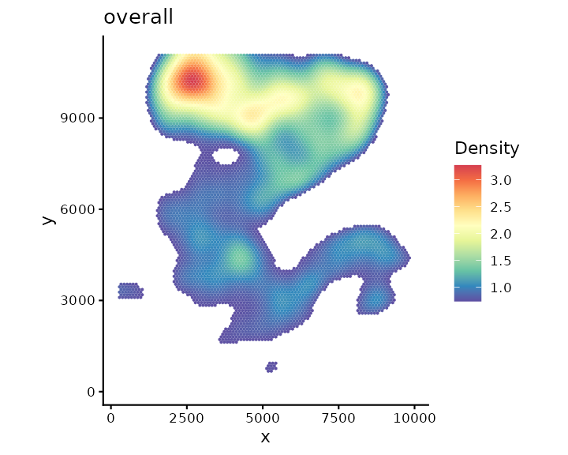
We can also visualise the density of individual cell type, e.g., fibroblast cells.
plotDensity(spe, coi = "Fibroblasts")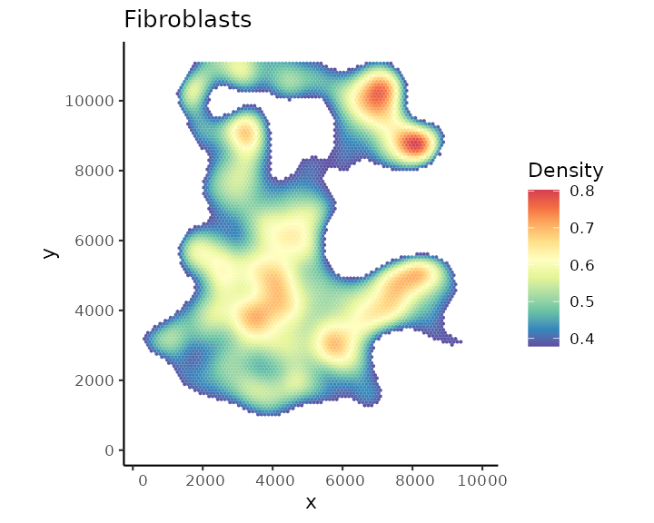
Find Regions-of-interest (ROIs)
After obtaining grid-based density for each COI, we can then detect regions-of-interest (ROIs) based on density or select by user.
Detected by algorithm
To detect ROIs automatically, we can use the function
findROI.
The detected ROIs are saved in the metadata of the SpatialExperiment object.
Here we identify ROIs based on the fibroblasts cell density.
spe <- findROI(spe, coi = "Fibroblasts")
metadata(spe)$fibroblasts_roi## DataFrame with 1833 rows and 6 columns
## component members x y xcoord ycoord
## <factor> <character> <character> <character> <numeric> <numeric>
## 1 1 38-34 38 34 4030.94 3013.76
## 2 1 39-34 39 34 4130.94 3013.76
## 3 1 40-34 40 34 4230.94 3013.76
## 4 1 41-34 41 34 4330.94 3013.76
## 5 1 42-34 42 34 4430.94 3013.76
## ... ... ... ... ... ... ...
## 1829 8 66-124 66 124 6830.94 10808
## 1830 8 67-124 67 124 6930.94 10808
## 1831 8 68-124 68 124 7030.94 10808
## 1832 8 69-124 69 124 7130.94 10808
## 1833 8 70-124 70 124 7230.94 10808We can visualise the ROIs with function plotROI.
plotROI(spe, roi = "Fibroblasts")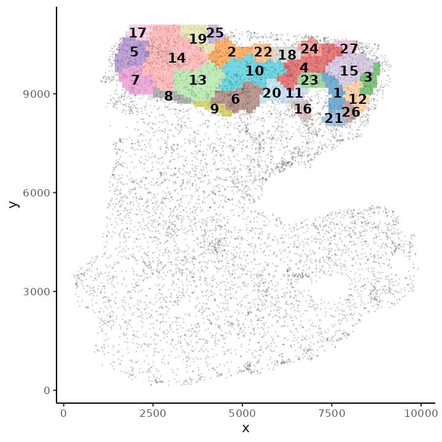
Select ROI by user
Alternatively, users can select ROIs based on their own research
interest (drawn by hand). This can be done using function
selectRegion. This function will open an interactive window
with an interactive plot for users to zoom-in/-out and select ROI using
either a rectangular or lasso selection tool. Users can also press the
Export selected points button to save the ROIs as object in
the R environment.
selectRegion(metadata(spe)$grid_density, x.col = "x_grid", y.col = "y_grid")After closing the interactive window, the selected ROI has been saved
as a data.frame object named sel_region in the R
environment.
sel_regionWe can then use the postSelRegion to save the ROI in the
metadata of the SpatialExperiment object.
spe1 <- postSelRegion(spe, sel_region = sel_region)
metadata(spe1)$roiSimilarly, we can plot visualise the user-defined ROI with function
plotROI.
plotROI(spe1)Testing relationship between cell types
After defining ROIs, we can then test the relationship between any
two cell types within each ROI or overall but account for ROI variation
using a cubic spline or a linear fit. This can be done with function
corrDensity.
results <- corDensity(spe, roi = "Fibroblasts")We can see the correlation between each pair of cell types in each fibroblasts ROI.
results$ROI## DataFrame with 48 rows and 9 columns
## celltype1 celltype2 ROI ngrid cor.coef t
## <character> <character> <character> <numeric> <numeric> <numeric>
## 1 B cells Breast cancer 1 31 0.338005 0.755462
## 2 B cells Breast cancer 2 160 -0.913986 -2.483606
## 3 B cells Breast cancer 3 325 -0.482294 -1.722597
## 4 B cells Breast cancer 4 369 -0.425421 -1.203010
## 5 B cells Breast cancer 5 87 0.437659 0.817755
## ... ... ... ... ... ... ...
## 44 Fibroblasts T cells 4 369 0.06743410 0.2466458
## 45 Fibroblasts T cells 5 87 0.60889057 2.2109896
## 46 Fibroblasts T cells 6 173 0.18793427 0.5924011
## 47 Fibroblasts T cells 7 315 -0.16143840 -0.6815605
## 48 Fibroblasts T cells 8 373 0.00536088 0.0298639
## df p.Pos p.Neg
## <numeric> <numeric> <numeric>
## 1 4.42476 0.244103 0.7558973
## 2 1.21561 0.896728 0.1032725
## 3 9.78951 0.941830 0.0581705
## 4 6.54929 0.864675 0.1353253
## 5 2.82248 0.238409 0.7615909
## ... ... ... ...
## 44 13.31707 0.4044718 0.595528
## 45 8.29697 0.0284087 0.971591
## 46 9.58525 0.2836464 0.716354
## 47 17.35906 0.7477454 0.252255
## 48 31.03191 0.4881834 0.511817Or the correlation between each pair of cell types across all fibroblasts ROI:
results$overall## DataFrame with 6 rows and 5 columns
## celltype1 celltype2 cor.coef p.Pos p.Neg
## <character> <character> <numeric> <numeric> <numeric>
## 1 B cells Breast cancer -0.1451816 0.59921852 0.135175
## 2 B cells Fibroblasts 0.0324573 0.58293635 0.570772
## 3 B cells T cells 0.4838632 0.00725754 0.996425
## 4 Breast cancer Fibroblasts 0.0510354 0.31924365 0.876378
## 5 Breast cancer T cells -0.1847721 0.29873370 0.113617
## 6 Fibroblasts T cells 0.1756014 0.16264804 0.873024We can also visualise the fitting using function
plotDensCor.
plotDensCor(spe, celltype1 = "Breast cancer", celltype2 = "Fibroblasts")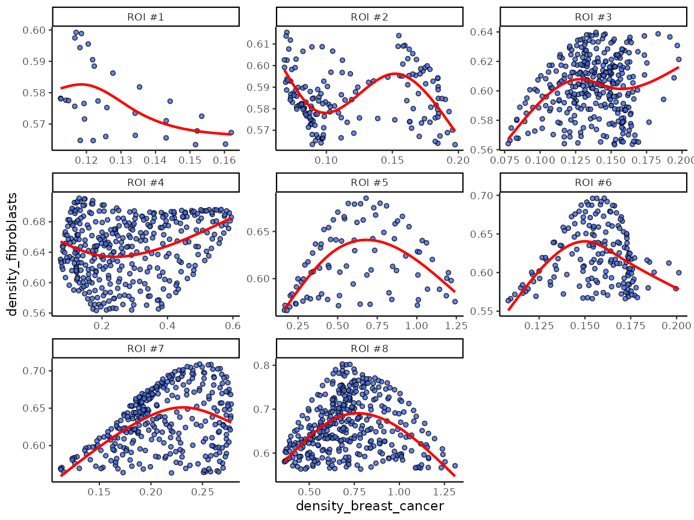
Or, we can visualise the statistics between each pair of cell types
using function plotCorHeatmap in the ROIs:
plotCorHeatmap(results$ROI)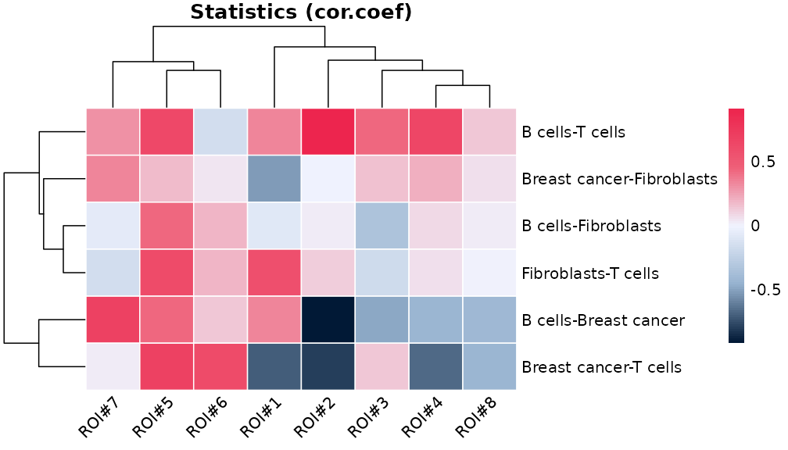
Or the correlation between cell type pairs across the whole slide:
plotCorHeatmap(results$overall)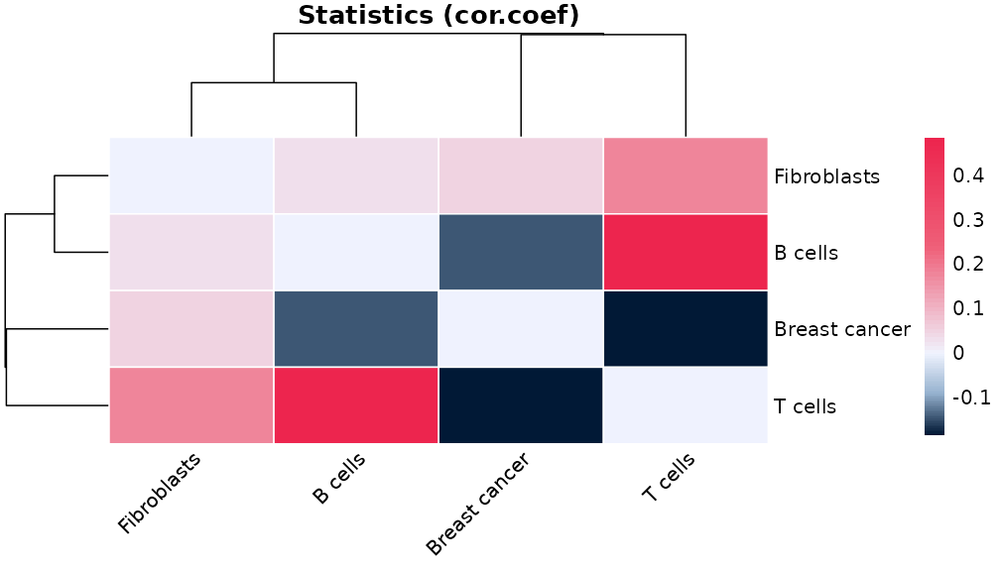
Cell-based analysis
Based on the grid density, we can ask many biological question about the data. For example, we would like to know if a certain cell type that are located in high density of fibroblast cells are different to the same cell type from a different level of fibroblast region.
cell annotation based on grid density
To address this question, we first need to divide cells into
different levels of grid density. This can be done using a contour
identification strategy with function getContour.
spe <- getContour(spe, coi = "Fibroblasts", equal.cell = TRUE)Different level of contour can be visualised with cells using
plotContour.
plotContour(spe, coi = "Fibroblasts")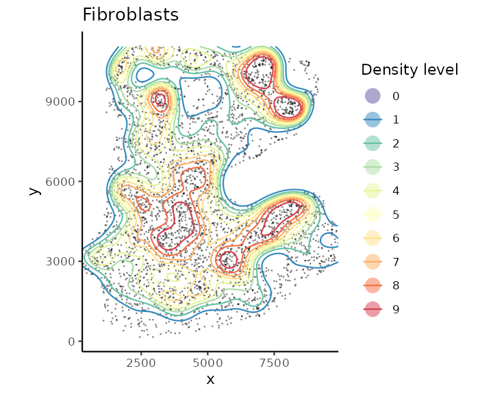
We can then annotate cells by their locations within each contour
using function allocateCells.
spe <- allocateCells(spe)
plotSpatial(spe, group.by = "fibroblasts_contour", pt.alpha = 0.5)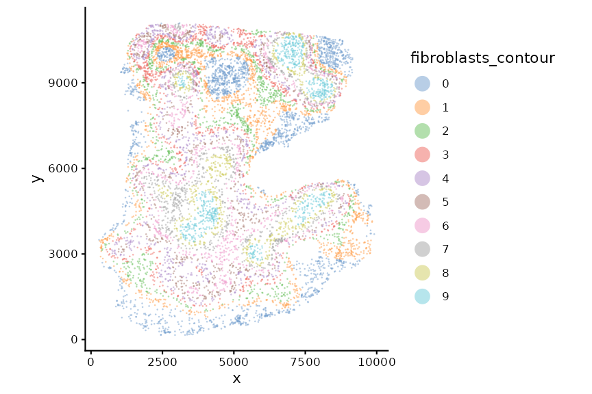
We can visualise cell type composition per level.
plotCellCompo(spe, contour = "Fibroblasts")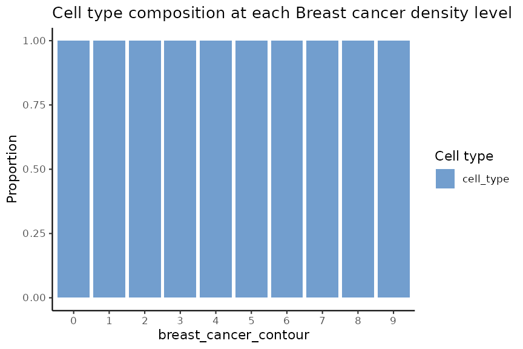
plotCellCompo(spe, contour = "Fibroblasts", roi = "Fibroblasts")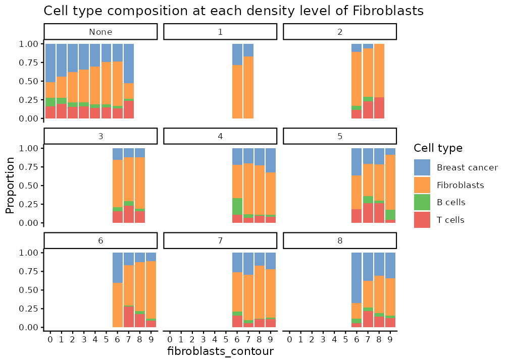
## R version 4.6.0 (2026-04-24)
## Platform: x86_64-pc-linux-gnu
## Running under: Ubuntu 24.04.4 LTS
##
## Matrix products: default
## BLAS: /usr/lib/x86_64-linux-gnu/openblas-pthread/libblas.so.3
## LAPACK: /usr/lib/x86_64-linux-gnu/openblas-pthread/libopenblasp-r0.3.26.so; LAPACK version 3.12.0
##
## locale:
## [1] LC_CTYPE=C.UTF-8 LC_NUMERIC=C LC_TIME=C.UTF-8
## [4] LC_COLLATE=C.UTF-8 LC_MONETARY=C.UTF-8 LC_MESSAGES=C.UTF-8
## [7] LC_PAPER=C.UTF-8 LC_NAME=C LC_ADDRESS=C
## [10] LC_TELEPHONE=C LC_MEASUREMENT=C.UTF-8 LC_IDENTIFICATION=C
##
## time zone: UTC
## tzcode source: system (glibc)
##
## attached base packages:
## [1] stats4 stats graphics grDevices utils datasets methods
## [8] base
##
## other attached packages:
## [1] sf_1.1-1 SpatialExperiment_1.22.0
## [3] SingleCellExperiment_1.34.0 SummarizedExperiment_1.42.0
## [5] Biobase_2.72.0 GenomicRanges_1.64.0
## [7] Seqinfo_1.2.0 IRanges_2.46.0
## [9] S4Vectors_0.50.1 BiocGenerics_0.58.1
## [11] generics_0.1.4 MatrixGenerics_1.24.0
## [13] matrixStats_1.5.0 scider_1.9.2
## [15] ggplot2_4.0.3
##
## loaded via a namespace (and not attached):
## [1] DBI_1.3.0 deldir_2.0-4 rlang_1.2.0
## [4] magrittr_2.0.5 snakecase_0.11.1 otel_0.2.0
## [7] e1071_1.7-17 compiler_4.6.0 spatstat.geom_3.8-1
## [10] mgcv_1.9-4 systemfonts_1.3.2 fftwtools_0.9-11
## [13] vctrs_0.7.3 stringr_1.6.0 pkgconfig_2.0.3
## [16] fastmap_1.2.0 magick_2.9.1 XVector_0.52.0
## [19] lwgeom_0.2-16 labeling_0.4.3 promises_1.5.0
## [22] rmarkdown_2.31 ragg_1.5.2 purrr_1.2.2
## [25] xfun_0.58 cachem_1.1.0 jsonlite_2.0.0
## [28] goftest_1.2-3 later_1.4.8 DelayedArray_0.38.2
## [31] spatstat.utils_3.2-3 R6_2.6.1 bslib_0.11.0
## [34] stringi_1.8.7 RColorBrewer_1.1-3 spatstat.data_3.1-9
## [37] spatstat.univar_3.2-0 lubridate_1.9.5 jquerylib_0.1.4
## [40] Rcpp_1.1.1-1.1 knitr_1.51 tensor_1.5.1
## [43] splines_4.6.0 httpuv_1.6.17 Matrix_1.7-5
## [46] igraph_2.3.2 timechange_0.4.0 tidyselect_1.2.1
## [49] abind_1.4-8 yaml_2.3.12 spatstat.random_3.5-0
## [52] spatstat.explore_3.8-1 lattice_0.22-9 tibble_3.3.1
## [55] shiny_1.13.0 withr_3.0.2 S7_0.2.2
## [58] evaluate_1.0.5 desc_1.4.3 units_1.0-1
## [61] proxy_0.4-29 polyclip_1.10-7 pillar_1.11.1
## [64] KernSmooth_2.23-26 plotly_4.12.0 dbscan_1.2.4
## [67] scales_1.4.0 xtable_1.8-8 class_7.3-23
## [70] glue_1.8.1 janitor_2.2.1 pheatmap_1.0.13
## [73] lazyeval_0.2.3 tools_4.6.0 hexDensity_1.4.10
## [76] hexbin_1.28.5 data.table_1.18.4 fs_2.1.0
## [79] grid_4.6.0 tidyr_1.3.2 nlme_3.1-169
## [82] fastmatrix_0.6-6 cli_3.6.6 spatstat.sparse_3.2-0
## [85] textshaping_1.0.5 S4Arrays_1.12.0 viridisLite_0.4.3
## [88] dplyr_1.2.1 gtable_0.3.6 SpatialPack_0.4-1
## [91] sass_0.4.10 digest_0.6.39 classInt_0.4-11
## [94] SparseArray_1.12.2 rjson_0.2.23 htmlwidgets_1.6.4
## [97] farver_2.1.2 htmltools_0.5.9 pkgdown_2.2.0
## [100] lifecycle_1.0.5 httr_1.4.8 mime_0.13